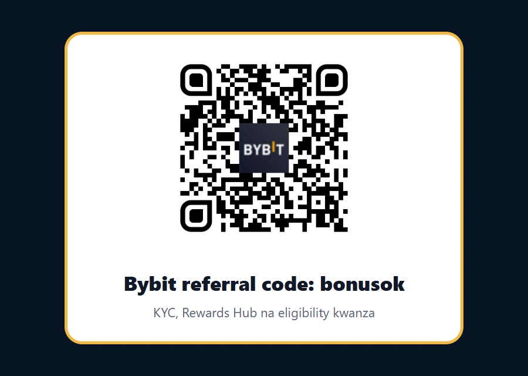

Bybit referral code bonusok: mwongozo wa trader hai wa Kiswahili Afrika
Ukitafuta Bybit referral code, code ya rufaa ya Bybit, Bybit invite code, Bybit promo code au bonus code bonusok, usianze na ukubwa wa bonus. Anza na swali la kitaalamu zaidi: je, Bybit inakufaa kulingana na nchi yako, KYC yako, bidhaa unazotaka kutumia, kiwango chako cha risk, njia ya deposit, na aina ya trading volume unayopanga kufanya?
Kwa nini angle hii ni muhimu kwa Tanzania, Kenya, Uganda, Rwanda, DRC na Afrika Mashariki/Kati?
Swahili ni lugha ya biashara, elimu na media katika sehemu kubwa ya Afrika Mashariki, na pia inasikika katika jamii za DRC, Rwanda, Burundi, Somalia, Zambia na diaspora. Lakini mazingira ya crypto hayafanani nchi hadi nchi. Kenya inaelekea kwenye mfumo rasmi wa Virtual Asset Service Providers kupitia sheria na kanuni mpya. Tanzania imekuwa na msimamo mkali zaidi kuhusu virtual currencies katika matangazo ya Benki Kuu. Rwanda imeripotiwa kuwa na msimamo wa tahadhari sana kuhusu matumizi ya crypto na franc ya Rwanda. Uganda na DRC zina mahitaji yake ya compliance, benki, mobile money, P2P na tax. Kwa hiyo ukurasa mzuri wa referral haupaswi kusema tu "jiunge sasa"; unatakiwa kumsaidia msomaji aepuke makosa ya KYC, restrictions, false location, VPN bypass, P2P scams na kutumia bidhaa zisizofaa.
Hii ndiyo sababu tunatumia code bonusok kama mlango wa kuingia, lakini ujumbe mkuu ni eligibility kwanza. Trader anayefanya volume anataka execution nzuri, liquidity, order types, API, risk controls na njia salama ya kuingia na kutoka. Kama mtu yuko Kenya na anatafuta USDT/KES P2P, au DRC na anaona Bybit P2P CDF announcement, swali lake si bonus pekee; anataka kujua kama onboarding ni safi, escrow inaeleweka, counterparties wana rating nzuri, na terms hazikiuki sheria za ndani. Kama mtu yuko Tanzania au Rwanda, tahadhari ya sheria ni sehemu ya maamuzi, si mstari mdogo mwisho wa makala.
Code ya rufaa: bonusok ni nini hasa?
Code ya rufaa ni bonusok, na njia ya moja kwa moja ni https://partner.bybit.com/b/bonusok. Unapofungua kiungo hicho, unapaswa kuingia kwenye mtiririko wa Bybit partner ambapo unaweza kujisajili, kuthibitisha account, na baadaye kuangalia Rewards Hub au event pages zilizo ndani ya account yako. Jambo muhimu: bonus na campaigns hubadilika. Baadhi ya campaigns ni "selected users only"; baadhi zinahitaji Identity Verification Level 1 au Level 2; baadhi zinahitaji ubofye Register Now kabla ya kufanya deposit au trade; na baadhi zinafunga mapema slots zikiisha.
Kwa hiyo usichukulie code bonusok kama ahadi ya malipo ya uhakika. Ichukulie kama channel ya referral inayoweza kukupa access ya kuangalia offers. Baada ya kusajili, angalia kama code imewekwa, fungua Rewards Hub, soma conditions, kagua country eligibility, kagua bidhaa unazotaka kutumia, kisha fanya deposit ndogo tu kama umeelewa risk. Hii ndiyo njia ya kuvutia trader bora zaidi: mtu anayesoma terms, si mtu anayebonyeza kwa pupa.
Scan QR au tumia link
QR hii imewekwa kutoka asset halisi ya partner link na imehakikiwa kabla ya kuchapishwa. Ikiwa unatumia simu, unaweza kuiscan; ikiwa uko desktop, tumia button ya referral. Lengo ni kuwa na njia rahisi lakini bado yenye tahadhari: usitumie VPN kuficha nchi, usitumie documents zisizo zako, na usifungue account kama Bybit au sheria za eneo lako haziruhusu huduma unayotaka.
Tumia partner link ya bonusok
Habari mpya za Bybit ambazo zinaweza kuvutia active traders
Kwa active trader, habari mpya si kitu cha kusoma kama entertainment tu. Inaweza kuonyesha mwelekeo wa exchange: bidhaa mpya, liquidity mpya, risk tooling, API improvements na campaigns zinazolenga volume. Katika wiki za karibuni Bybit imeonyesha mchanganyiko wa mambo manne: campaigns za deposit/trading, AI trading workflow, RWA/TradFi markets, na infrastructure ya institutional execution. Hizi ndizo hooks nilizochagua kwa ukurasa huu.
7.7 Flash Sale na kwa nini hatuipigi kelele kama offer ya Afrika
Bybit ilichapisha 7.7 Flash Sale tarehe 7 Julai 2026: deposit ya angalau 100 USDT inaweza kupata reward hadi 77 USDT kwa watumiaji wa nchi zilizochaguliwa, na event inaisha Julai 14, 2026 au slots zikiisha. Hii ni habari nzuri kama signal ya campaign activity, lakini tangazo linaonyesha ni SEA exclusive. Hivyo kwa msomaji wa Tanzania, Kenya, Uganda, Rwanda au DRC, tunaitaja kama mfano wa aina ya campaigns zinazotokea ndani ya Bybit, si kama ahadi kwako. Ukiona event ndani ya account yako, ushiriki tu kama ukurasa wa event unasema uko eligible.
Summer Trading Competition na Demo Trading Challenge
Bybit pia imetangaza Summer Trading Competition yenye prize pool ya 120,000 USDT kwa selected users, na Demo Trading Challenge ya 20,000 USDT. Hizi zinaweza kuwavutia traders wenye discipline: competition ya live trading inahitaji kuzingatia P&L, order behavior na anti-abuse rules; demo challenge inaweza kuwa njia ya kujaribu execution bila kuweka mtaji halisi, ingawa qualification volume ni kubwa. Kwa trader wa Swahili, value hapa si "pesa ya bure"; value ni kujenga checklist: unaweza kusoma rules, unajua kama subaccounts zinahesabiwa au hazihesabiwi, unaelewa minimum volume, na uko tayari kutopush leverage kwa sababu ya leaderboard.
AI Subaccount: nzuri kwa testing, si leseni ya kuacha kufikiri
AI Subaccount ni moja ya hooks bora kwa active traders kwa sababu inazungumza na tatizo halisi: kutenganisha strategy, automation na risk. Bybit inasema AI Subaccount inaweza kuendesha strategy 24/7, na campaign yake ya Juni 16 hadi Julai 15, 2026 inahusisha KYC Level 1, kuunda AI Subaccount, na AI trade ya 500 USDT au zaidi. Hii inaweza kumvutia trader anayependa bots, lakini inapaswa kutumiwa kama sandbox ya risk, si kama mashine ya uhakika ya faida. Tumia position sizing ndogo, weka stop rules, fuatilia drawdown, na usiruhusu AI strategy ifanye trade bila kujua market regime.
XAUT Options, RWA na Global Assets Trading Fest
Bybit ilitangaza XAUT Options kama bidhaa inayohusisha tokenized gold na options. Pia Global Assets Trading Fest inalenga US stocks, precious metals, indices, forex, crypto RWA pairs, xStocks na RWA markets kwa prize pool ya 202,000 USDT hadi Julai 16, 2026. Kwa traders wa Afrika wanaofuatilia gold, USD, inflation, commodities na cross-border value, RWA/TradFi angle inaweza kuwa na mvuto zaidi kuliko meme coins. Lakini lazima ukubali ukweli: options na RWA futures ni complex. Unahitaji kuelewa expiry, implied volatility, spread, liquidity, margin, funding, fees, na kama bidhaa hiyo inapatikana katika nchi yako.
SBE Order Entry, API na POV Order kwa watu wanaofanya volume
SBE Order Entry ni high-performance order channel kwa institutional traders. Inatumia Simple Binary Encoding kupitia WebSocket order channel na inalenga latency ya chini kuliko JSON kwa actions kama create, replace na cancel. POV Order ni execution tool kwa large trades inayotumia order book conditions. Hizi hazitakuwa priority kwa beginner anayetaka kununua USDT ya kwanza, lakini ni signal kubwa kwa active traders, market makers, API users na watu wanaosimamia size kubwa. Ukiwa unafanya volume kubwa, unapaswa kujali order routing, cancel behavior, order rate limits, slippage, partial fills na monitoring. Code bonusok inavutia zaidi kama page inaeleza haya, kwa sababu active trader anajua kuwa fee/reward ni sehemu ndogo ya equation.
Checklist kabla ya kutumia Bybit bonusok
1. Thibitisha nchi yako, si lugha yako tu
Kiswahili hakimaanishi nchi moja. Msomaji anaweza kuwa Dar es Salaam, Nairobi, Kampala, Kigali, Goma, Lubumbashi, Zanzibar, Mombasa au diaspora. Bybit ina orodha ya excluded jurisdictions, na inasema kama mtu anatoa taarifa zisizo sahihi kuhusu location au residence, account inaweza kufungwa na positions liquidated. Hivyo usitumie VPN au address ya mtu mwingine. Angalia Service Restricted Countries, terms za Bybit, na sheria za nchi yako. Tanzania ina public notice ya Bank of Tanzania inayoonya kuhusu virtual currency. Kenya ina mchakato wa VASP framework. Rwanda ina mazingira ya tahadhari. Hata kama nchi yako haipo kwenye list ya Bybit, bado sheria za ndani, bank policy, tax na mobile money rules zinaweza kuathiri matumizi.
2. Kagua KYC na Rewards Hub kabla ya deposit kubwa
Rewards Hub inaweza kuwa na Bonus, Coupons, Fee Savers, Airdrops, Fee Discount, APY Booster, Loss Cover Voucher, Trial Fund na aina nyingine za rewards. Lakini reward inaweza ku-expire, inaweza kuwa kwa product fulani tu, na inaweza kuhitaji task fulani. KYC inaweza kuwa lazima kwa campaigns nyingi. Ukiwa active trader, usifanye deposit kubwa kabla ya kujua kama account yako imepitishwa, kama country eligibility iko sawa, na kama reward inayokufanya ujiunge bado ipo. Unaweza kwanza kufungua account kupitia bonusok, kisha kagua Rewards Hub na terms kabla ya kutumia mtaji mkubwa.
3. Kwa P2P, anza na counterparties na proof, si price tu
Bybit P2P inaonyesha support kwa KES/USDT page na tangazo la CDF kwa Congolese Franc. Hii ni relevant kwa Kenya na DRC, lakini P2P ni sehemu yenye operational risk. Usichague offer kwa price pekee. Angalia rating ya merchant, completion rate, payment method, limits, jina la mpokeaji, muda wa release, escrow rules na dispute process. Usifanye off-platform deal. Usikubali mtu akuambie "release kwanza". Hifadhi screenshots na transaction references. Kwa Tanzania, Uganda, Rwanda na sehemu nyingine, hakikisha payment method na local rules hazikuweki kwenye risk.
4. Tenganisha beginner, active trader na API trader
Beginner anahitaji spot, deposit ndogo, KYC, risk warning na kujifunza order types. Active trader anahitaji fee schedule, liquidity, funding, derivatives eligibility, journal na stop-loss discipline. API trader anahitaji keys, permissions, IP whitelist, subaccounts, monitoring, rate limits, SBE/JSON differences na fail-safe. Ukijisajili kupitia bonusok, usitumie bidhaa zote siku moja. Chagua path moja: spot onboarding, P2P onboarding, demo challenge, AI Subaccount test, au API research. Ukiweka kila kitu pamoja, unachanganya learning risk na market risk.
5. Usifanye trading kwa sababu ya campaign
Campaign inaweza kuongeza motivation, lakini haipaswi kubadilisha strategy yako. Kama event inahitaji volume kubwa kuliko kawaida yako, usiiongeze kwa lazima. Kama leaderboard inakuvuta kutumia leverage isiyofaa, acha. Kama reward ni 77 USDT lakini risk yako ni position ya maelfu ya USDT bila plan, hesabu haipo sawa. Trader mzuri anatumia rewards kama discount ndogo, si kama thesis ya trade.
Jinsi ya kutumia page hii kwa practical onboarding
Hatua ya kwanza ni kufungua referral link ya bonusok au kuscan QR. Hatua ya pili ni kuthibitisha kama account inaonyesha code/channel sahihi. Hatua ya tatu ni Identity Verification kama unataka campaigns au limits za juu. Hatua ya nne ni kufungua Rewards Hub na kusoma tasks zilizopo kwenye account yako. Hatua ya tano ni kuangalia bidhaa unayotaka: spot, P2P, futures, options, RWA, AI Subaccount au API. Hatua ya sita ni kuanza na amount ndogo na kuweka journal: kwa nini umeingia, risk iko wapi, stop ni ipi, na kama reward inabadilisha chochote kwenye decision. Kama huwezi kuandika sababu ya trade, usifanye trade.
Kwa Kenya, sehemu ya P2P/KES inaweza kuwa muhimu kwa user anayetaka on/off-ramp, lakini bado unahitaji kufuata laws, tax na bank/mobile money policy. Kwa DRC, CDF support inaonyesha opportunity kwa local fiat flow, lakini merchant selection na dispute discipline ni muhimu. Kwa Tanzania na Rwanda, tahadhari ya regulator ni kubwa zaidi, kwa hiyo msomaji anatakiwa kupata ushauri wa kisheria au kuacha kabisa kama local rules haziruhusu. Kwa Uganda na nchi nyingine za EAC/Great Lakes, usichukulie kwamba kama mtu mwingine anatumia exchange basi wewe pia uko salama; compliance ni personal.
Kwa nini hii inaweza kuvutia referrals bora zaidi
Referral nyingi zisizo bora hutoka kwa watu wanaotafuta "free bonus" tu. Wanafungua account, hawamalizi KYC, hawadeposit, au wanafanya trade moja ya kubahatisha. Active trader bora huuliza maswali marefu: fees zikoje, execution ikoje, API ipoje, P2P ina escrow nzuri, country yangu iko sawa, RWA products zina liquidity, campaigns zinahitaji volume gani, na risk controls ziko wapi. Ndiyo maana makala hii ni ndefu na imejaa checklist. Inamchuja msomaji. Mtu ambaye bado anabaki hadi mwisho ana uwezekano mkubwa wa kuwa referred user mwenye quality kuliko mtu aliyebonyeza banner bila kuelewa.
Hook za Bybit nilizochagua zinahusiana na volume na sophistication: AI Subaccount kwa automation, XAUT Options/RWA kwa traders wanaofuatilia gold na tokenized assets, SBE/API kwa execution, POV kwa large orders, P2P kwa local access, na Rewards Hub kwa verification ya bonus. Hii inafanya page iwe na maneno ambayo active trader anaweza kutafuta: Bybit referral code Swahili, Bybit bonusok, code ya rufaa Bybit, Bybit P2P Kenya, Bybit P2P KES, Bybit CDF, Bybit AI Subaccount, Bybit XAUT Options, Bybit API SBE, Bybit Rewards Hub, Bybit promo code Africa, Bybit invite code Tanzania, Kenya, Uganda, Rwanda, Congo.
Maswali yanayoulizwa mara kwa mara
Je, bonusok inanipa bonus ya uhakika?
Hapana. Bonusok ni code/link ya referral. Rewards zinategemea terms za Bybit, country eligibility, KYC, event registration, deposit/trading tasks, expiry na anti-abuse checks. Angalia Rewards Hub baada ya kusajili.
Je, ninaweza kutumia Bybit nikiwa Tanzania, Kenya, Uganda, Rwanda au DRC?
Usiamue kutoka kwenye makala moja. Angalia Bybit Service Restricted Countries, terms za account, bidhaa unayotaka kutumia, na sheria za nchi yako. Kenya ina VASP regulatory framework inayoendelea; Tanzania ina public notice ya Bank of Tanzania inayoonya kuhusu virtual currencies; Rwanda ina mazingira ya tahadhari kuhusu crypto na fiat. DRC ina CDF P2P announcement, lakini bado unahitaji compliance na risk checks.
Je, P2P ni salama?
P2P inaweza kuwa useful kwa local fiat, lakini ina risk ya counterparties, chargebacks, fake proof, off-platform pressure na disputes. Tumia escrow ya platform, usifanye deal nje ya Bybit, angalia merchant history, na usi-release crypto kabla ya kuthibitisha malipo.
Je, AI Subaccount inaweza kuniingizia faida bila kazi?
Hapana. AI Subaccount inaweza kusaidia automation au testing, lakini strategy inaweza kupoteza pesa. Tumia size ndogo, limits, monitoring na journal. AI haiondoi market risk.
Hitimisho
Kama unatafuta Bybit referral code kwa Kiswahili, code ni bonusok na link ni partner.bybit.com/b/bonusok. Lakini kama unataka kuwa trader wa muda mrefu, usijiunge kwa sababu ya neno "bonus" pekee. Jiunge kwa sababu umeelewa eligibility, KYC, local rules, P2P risk, Rewards Hub, product availability, execution, API na risk management. Hapo ndipo referral inaweza kuwa na maana: si click ya haraka, bali mwanzo wa account inayotumika kwa discipline.
Vyanzo rasmi na marejeo
- Bybit 7.7 Flash Sale announcement: announcements.bybit.com
- Bybit Summer Trading Competition: announcements.bybit.com
- Bybit AI Subaccount campaign: announcements.bybit.com
- Bybit Global Assets Trading Fest: announcements.bybit.com
- Bybit XAUT Options: announcements.bybit.com
- Bybit SBE Order Entry: announcements.bybit.com
- Bybit POV Order: announcements.bybit.com
- Bybit Service Restricted Countries: bybit.com Help Center
- Bybit Rewards Hub FAQ: bybit.com Help Center
- Bybit P2P KES page: bybit.com P2P USDT/KES
- Bybit P2P CDF announcement: announcements.bybit.com
- Central Bank of Kenya public notice on draft VASP regulations 2026: centralbank.go.ke
- Bank of Tanzania public notice on virtual currencies: bot.go.tz PDF